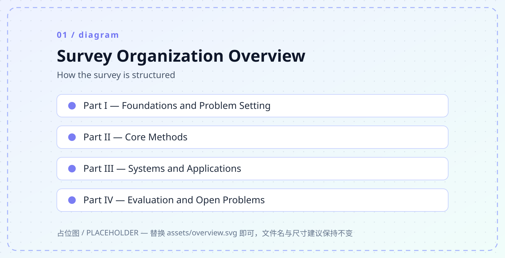
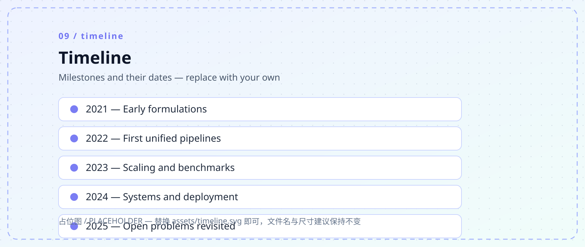
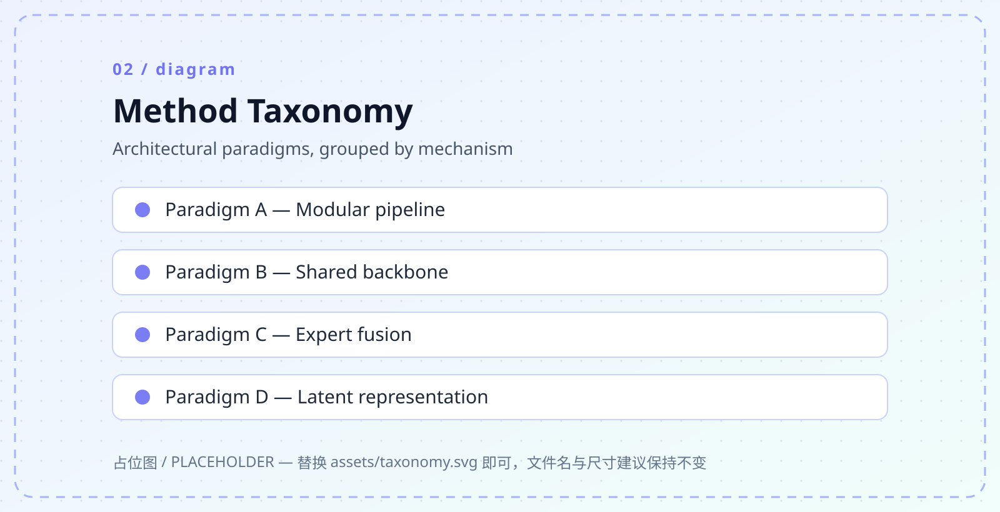
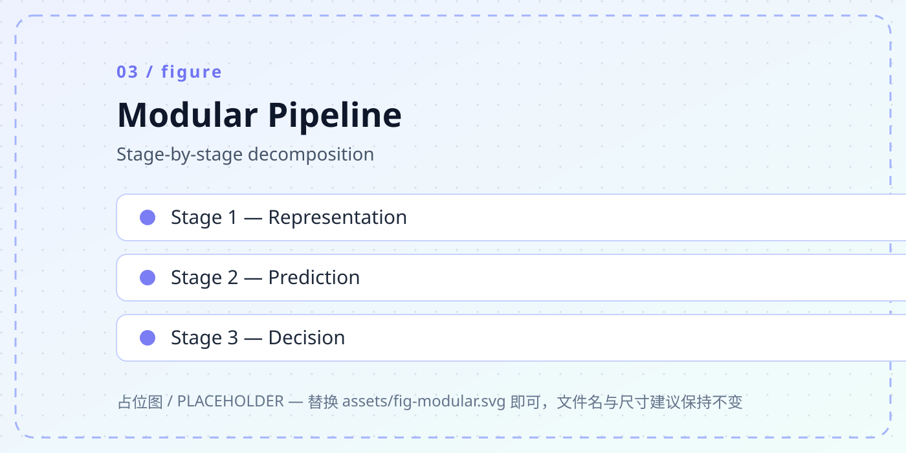
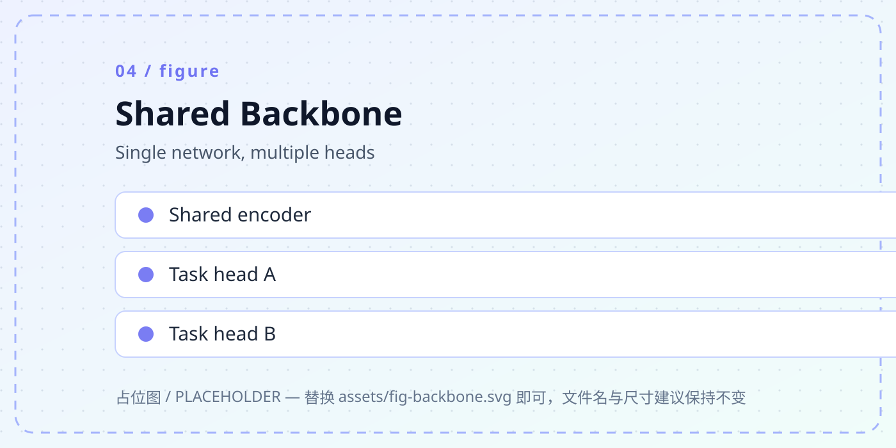
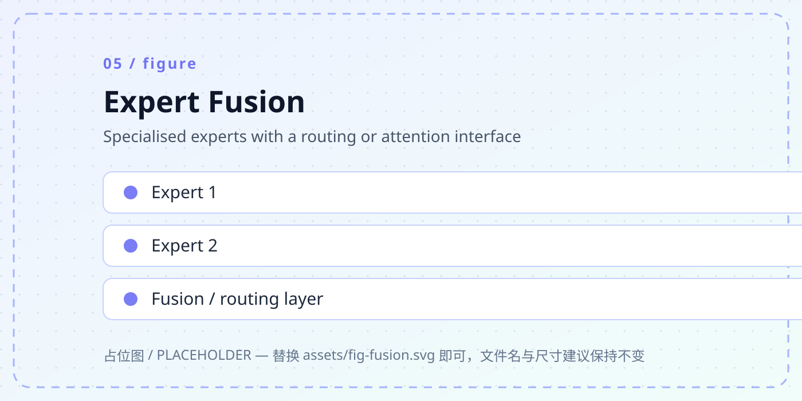
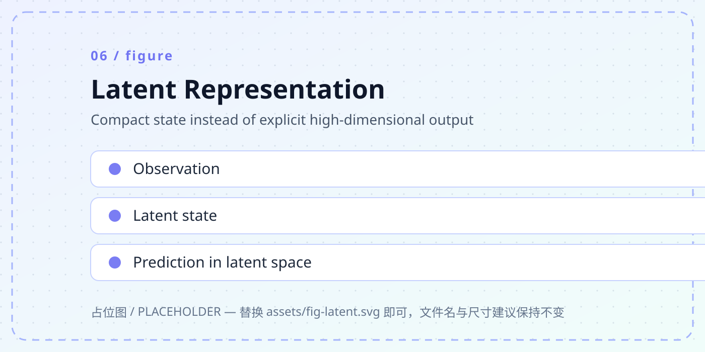
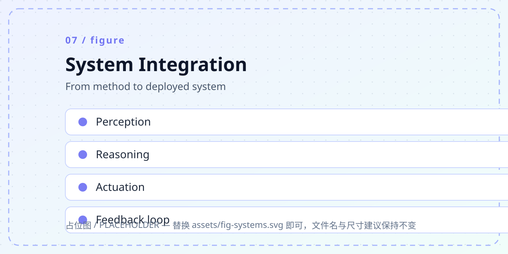
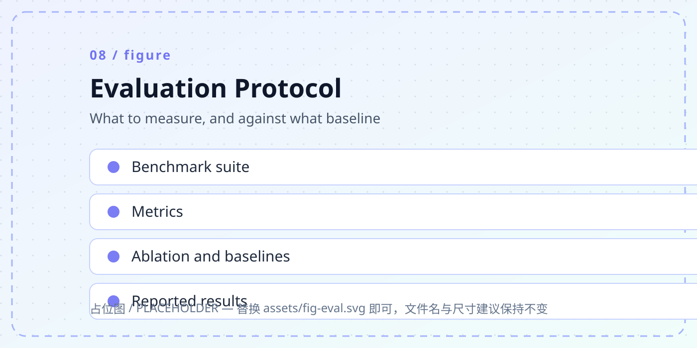

First organising axis
One sentence on what this axis separates, e.g. the architectural paradigms you use to group methods.
axis onekey idea
Comprehensive Survey · Sample Topic · 2025
Replace this paragraph with one or two sentences that say what the survey covers, what it organises, and who should read it. Keep it under ~40 words — this is the text that appears in search results and social cards.
1Your University · 2Another University · 3A Company or Institute
Abstract
Write the abstract here. A useful shape for a survey abstract is: (1) the problem area and why it matters now; (2) what makes this survey different from existing ones; (3) the organising principle — in what dimensions you classify the literature; (4) what practitioners and researchers can take away. Three to five sentences is usually enough on a web page, even if the PDF abstract is longer.
The rest of this template demonstrates every component you are likely to need: highlighted contribution cards, a research timeline, a taxonomy with figures, benchmark tables, a BibTeX block with a copy button, and footer/licence text. Delete what you do not use — the page gets faster and easier to maintain.
One sentence on what this axis separates, e.g. the architectural paradigms you use to group methods.
One sentence on the second axis, e.g. how methods are used in practice rather than how they are built.
One sentence on the third axis, e.g. resources, benchmarks, or evaluation protocols.

assets/overview.svg with your own figure of the same name.Timeline
Timelines date fast. Put the coverage cut-off date in the heading or the first line, and say how you will maintain it — reviewers and readers both look for that.
What the earliest work established, and the assumptions later work had to drop.
What stopped being the bottleneck, and what became one instead.
Engineering constraints enter the literature: latency, cost, robustness, evaluation.
Which early assumptions turned out to be wrong, and what replaced them.

Taxonomy
State the classification rule explicitly. A reader should be able to place a new paper into exactly one branch without asking you.

Decomposed into stages that can be trained and replaced independently. Easy to analyse, harder to tune jointly.
One network, several heads. Shares representation across tasks at the cost of coupling.
Specialised modules combined by routing or attention. Scales capacity, complicates training and serving.
Compress the state instead of materialising a full high-dimensional output. Cheaper inference, harder to inspect.
Method families
One figure and one paragraph per family is usually the right density. More than that and readers stop scrolling.




Writing tip. Each method paragraph reads best as: what problem it targets → the mechanism in one sentence → what it costs (compute, data, latency) → the evidence. Four sentences, no more.
Systems
If your field has a deployment gap, this is the section reviewers remember. Be concrete about constraints.

State the operating point in milliseconds, not adjectives.
Hardware and cloud spend is a real research constraint.
What happens out of distribution, and how it is detected.
How failures are found after deployment, not before.
Evaluation
Surveys earn citations when they tell readers which metric is actually informative — and which one is gamed.

Watch out. Call out metrics that correlate poorly with downstream utility. This is one of the most useful things a survey can do, and it is rarely done.
Resources
These two tables are real HTML rather than images, so readers can select and search them, screen readers can parse them, and they stay sharp on any display. Fill in your own rows.
| Resource | Year | Scale | Modalities | Supervision | Licence |
|---|---|---|---|---|---|
| Resource-Alpha | 2022 | 1.2M | RGB, depth | Dense labels | CC BY 4.0 |
| Resource-Beta | 2023 | 480K | RGB, audio | Weak labels | MIT |
| Resource-Gamma | 2024 | 7.9M | Multi-view | Self-supervised | Research only |
| Resource-Delta | 2025 | 2.1M | RGB, text | Instruction pairs | Apache 2.0 |
Replace these rows. Keep the num class on numeric cells — it enables tabular figures so columns align.
| Benchmark | Task type | Primary metric | Coverage A | Coverage B | Coverage C |
|---|---|---|---|---|---|
| Bench-One | Perception | Accuracy | ✓ | – | ✗ |
| Bench-Two | Control | Success rate | – | ✓ | ✗ |
| Bench-Three | Long horizon | Task completion | ✗ | – | ✓ |
Open problems
Phrase each item as a testable gap, not a wish. "X is unmeasured under condition Y" beats "X needs more work".
What is missing, why existing evaluations cannot detect it, and what an experiment would look like.
What is missing, why existing evaluations cannot detect it, and what an experiment would look like.
What is missing, why existing evaluations cannot detect it, and what an experiment would look like.
What is missing, why existing evaluations cannot detect it, and what an experiment would look like.
What is missing, why existing evaluations cannot detect it, and what an experiment would look like.
What is missing, why existing evaluations cannot detect it, and what an experiment would look like.
Citation
Keep the key stable once published — people will have it in their .bib files.
@article{author2025samplesurvey,
title = {Sample Survey Title: A Template for Single-Page Survey Sites},
author = {Author, First and Author, Second and Author, Third},
journal = {arXiv preprint arXiv:XXXX.XXXXX},
year = {2025}
}Correspondence: corresponding@example.com